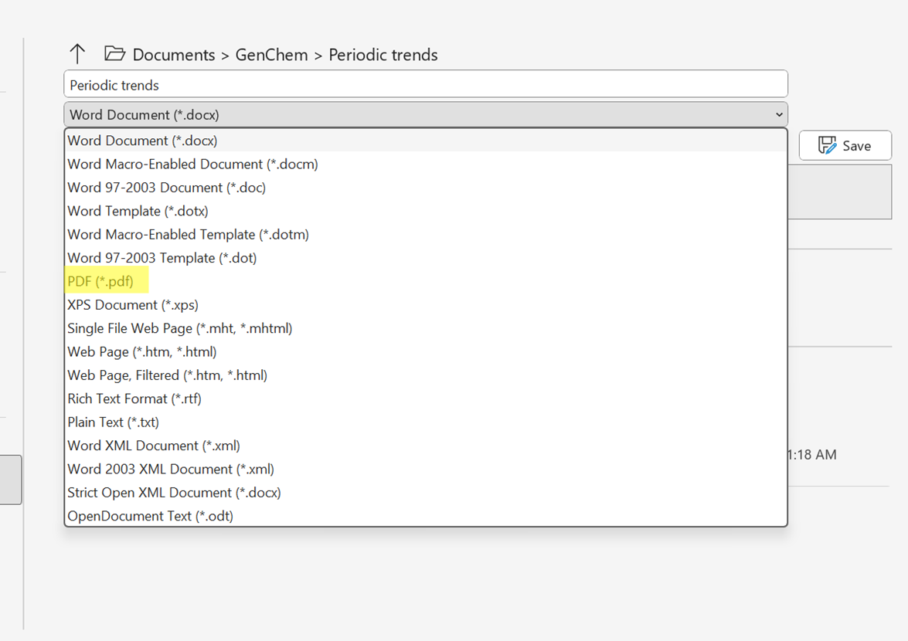
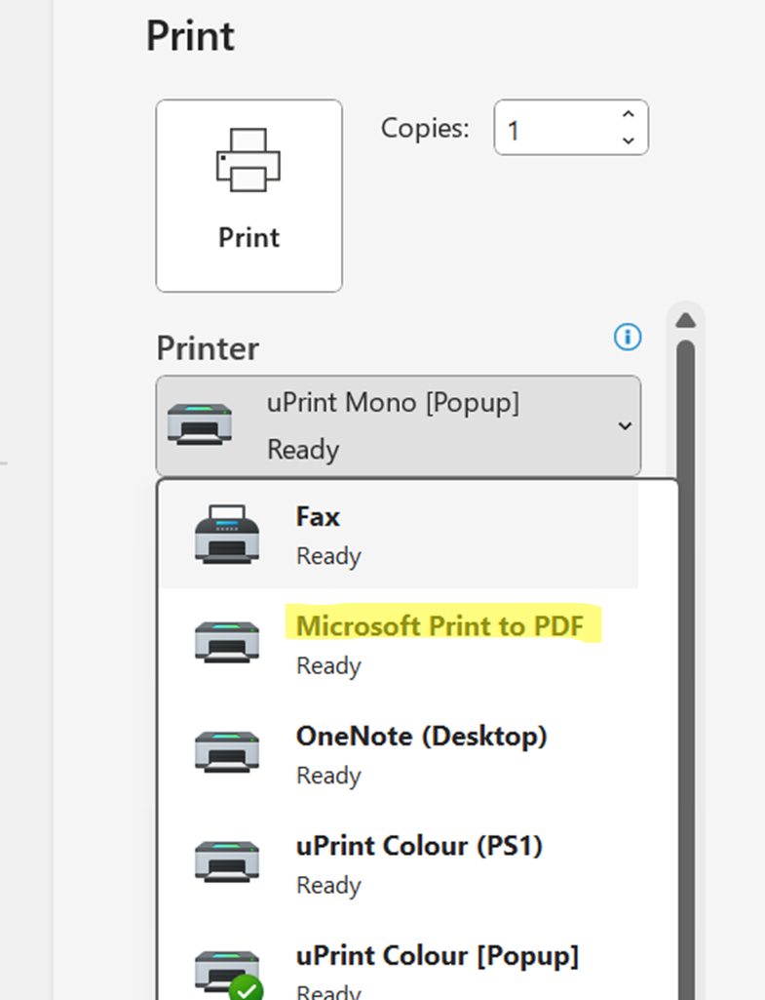
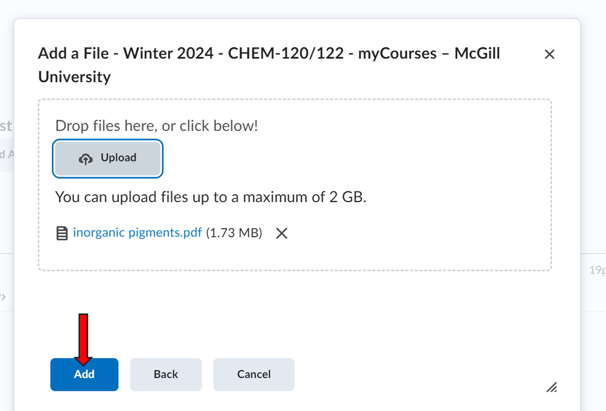
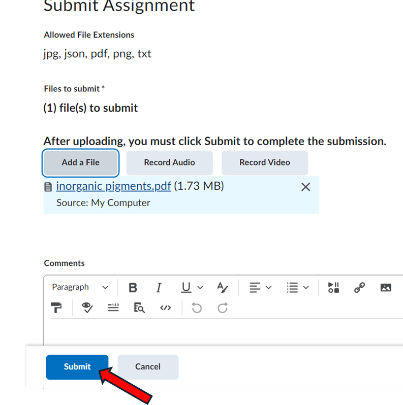

This guide is to help you to ensure that you submit your Lab Report correctly.
For most programs, you can save your document as a pdf by clicking on Save as from the File menu and choosing *.pdf file extension from the dropdown menu.

You can also choose an option of "Print to PDF" in a Print menu section to convert your document to a .pdf file.

If you do not submit your Lab report as a .pdf file and your TA is unable to read the file, you will be assigned a "0" grade.
You can either submit your Lab Report directly under Assignments or going to Content then to your experiment tab and to the Lab Report tab for this experiment.
A common mistake students make is to accidentally submit the empty template file for the lab report. Make sure that you save the file that you are working on under a different name before submitting it. You MUST verify on MyCourses what file you have submitted.
It can be easy to upload the wrong file altogether, or to accidentally submit a file from a previous lab. Make sure that you always double check your submission to ensure that you have submitted the right file.
If you accidentally don't press the submit button when submitting your files, we will not receive them and we won't be able to grade your lab report. Please ensure that you upload and submit the file.


Once you have submitted a file, a confirmation e-mail will be sent to your @mail.mcgill.ca e-mail address. If you do not receive an e-mail it means that you did not submit the file.
In order to double check your submission on MyCourses you can:
Make sure to always double check all the above. If for any reason you do not properly submit your lab report or results, you will be given a grade of "0". You may be able to submit after the deadline with any relevant late penalties being applied to your submission.